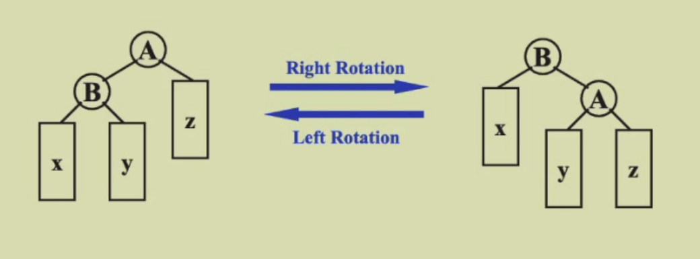

Lesson1：AVL树、Splay树与摊还分析
AVL树
引入原因: 二叉搜索树虽然时间Tp = \(O(height)\)，但是其在极端情况下可退化成链表，这样的话其时间就是O(n)。
平衡树的搜索时间更短，因为height是大于等于\(logn\)的，平衡的可以最大限度接近。
一个树被称为高度平衡的，如果: - 其左子树与右子树都是高度平衡的(一个递归定义) - 左右子树的高度差不超过1
我们定义平衡因子BF(node) = h~L~ - h~R~，所以很直观的，高度平衡的树的任何节点，其BF(node) = -1, 0, 1
树的旋转(rotation)
其作用是调整树的结构，使得树更加平衡。

共有四种旋转方法：
LL型也就是左左型，需要右旋一次
RR 型也就是右右型，需要左旋一次
LR型，需要先对左子树左旋，再对根节点右旋
RL型，需要先对右子树右旋，再对根节点左旋
判断是什么旋转是看哪个地方插入了导致某点"开始"不平衡，然后取其"左/右+右/左"子树的根节点。
翻译一下，LL转右子树根节点，RR转左子树根节点，LR转左子树根节点的右子树根节点，RL转右子树根节点的左子树根节点。
Tp = O(h), h为树高度，所以可以知道h = logn
假设左右子树高度都是h-1，由于左右都理论上可以减去至少1来变为h-1与h-2，h-2仍然满足，因此取h-2/h-1。
nh = nh-1 + nh-2 + 1，这也就是AVL树的最少节点数目的递推式。
n0 = 1 n1 = 2
Splay树
使用原因？如果使用原先的算法，假设一个链表样式的树(1<-2.......<-n)，那么每次查询都要O(n)。
Splay树任意的访问操作(包括搜索、插入、删除)都需要将对应元素转到根节点的位置。
一种非常naive的想法，就是不断 地把访问的结点与其父结点更换父子关系，事实上就是不断用SingleRotation 翻到根结点的位置。然而这个例子告诉你，这么做之后虽然把要访问的结点放到了根结点，但其它有的结点被移动到了很深的位置，这是不好的（对比PPT的15页）。事实上可以论证这样的旋转无法保证从空树开始的连续M个操作是O(Mlogn) 的，这就是PPT第13页的例子的作用，这个例子从空树开始，通过N 次插入（每次都是O(1)）和N 次查找（总共是N+···+1=O(N2)的操作数）构造了长度为2N 但操作O(N2) 的序列，不符合目标中从空树开始连续M个操作是O(Mlogn)的要求，因此我们要放弃这种naive 的、不断把访问的结点与其父结点更换父子关系，从而翻到根结点的方法
对于任何非根节点X，设其父亲为P，爷爷为G
情况1： P为根节点 旋转X P
情况2： P不为根节点
zig-zag: G P X不在一条直线，先转P再转G，本质与LR RL相同。
zig-zig: G P X一条直线上，先交换 P 和 G 的位置关系，再交换 X 和 P 的位置关系。
删除：
-
先找到X X就在Root
-
移除X，这样出现了两棵树
-
Findmax(T~L~)
-
让T~R~成为T~L~根节点的右孩子
摊还分析
target: M 个操作不超过O(M logN)
aggregate analysis 聚合分析
如果说n个操作的最坏情况总时间为T(n)，那么摊还消耗就是T(n)/n。
e.g. Stack 有三个操作：push pop mutipop
由于Size一定不会超过N，且每个元素贡献1次push与pop，故总时间开销为O(n)，因此摊还开销为O(n)/n=O(1)
Accounting method 核算法
其实就是摊还代价的值会大于实际的代价，但是我们定义摊还代价后可以将多出的时间(credit)拿去支付后续的操作时间。
也就是所谓钱先付掉，后续不用付了。
势能法
势能函数：我们为数据结构定义一个势能函数 Φ，它表示数据结构在某一状态下的“潜在”成本。该函数通常基于数据结构的当前状态或结构特征。
实际成本与势能变化：
当执行一个操作时，实际成本为c。 势能的变化ΔΦ 是操作前后势能的差值。 平摊成本（摊还代价）可以表示为： 平摊成本 = c + ΔΦ
In general, a good potential function should always assume its minimum at the start of the sequence.